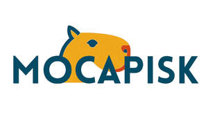

Trade Mark Journal No.2025/042 17 October 2025
UK00004275271 9 October 2025 (35,41,42)

International priority date claimed: 22 September 2025
(European Union Intellectual Property Office (EUIPO))
(019249914)
- Class 35
- Business assistance, management and administrative services; Human resources management; Human resources consultancy; Human resources management and recruitment services; Serving as a human resources department for others; Employment agency services; Job and personnel placement; Administering of professional competency testing; Business assistance; Business assistance relating to the establishment of franchises; Business assistance relating to the formation of commercial undertakings; Providing assistance in the field of business organisation; Assistance with business planning; Management assistance; Corporate management assistance; Outsource service provider in the field of customer relationship management; Business management; Interim business management; Commercial management; Mediation of agreements regarding the sale and purchase of goods; Mediation of advertising; Business organisation; Business efficiency expert services; Office functions services; Commercial intermediation services; Business supervision; Business examinations services; Advertising, marketing and promotional services; Business appraisals; Opinion polling; Market canvassing; Employee opinion polling; Preparation of public opinion surveys; Political opinion polling; Preparation of business surveys. .
- Class 41
- Vocational skills training; Vocational guidance [education or training advice]; Training in business skills; Training relating to employment skills; Education, entertainment and sport services; Accreditation of professional competency; Accreditation of educational services; Cultural activities; Education and instruction; Provision of recreational activities; Providing cultural activities; Providing games; Publishing, reporting, and writing of texts; Translation and interpretation; Arranging of quizzes; Tutoring; Teaching; Provision of training courses; Training; Educational services provided by a school; Boarding school education; Educational institute services; Educational instruction; Captioning. .
- Class 42
- IT services; Rental of computer hardware and facilities; Updating of memory banks of computer systems; Updating websites for others; Administration of user rights in computer networks; Server administration; Remote server administration; Computer performance testing; Computer system analysis; Computer analysis; Certification of data via blockchain; IT consultancy, advisory and information services; Creation of computing platforms for third parties; Preparation of computer programs for data processing; Creating and maintaining websites for cellular phones; Diagnosing computer hardware problems using software; Computer diagnostic services; Mining of cryptocurrency; Data mining; Digital watermarking; Providing temporary use of on-line non-downloadable software development tools; Providing information about the design and development of computer software, systems and networks; IT service management [ITSM]; Operating search engines; IT project management; Computer project management in the field of EDP; Administration of mail servers; Quantum computing; Integration of computer systems and networks; Maintenance of data processing software; Provision of data centre facilities; Monitoring of computer systems by remote access; Monitoring of computer system operation by remote access; Rental of user-programmable humanoid robots, not configured; Planning, design, development and maintenance of online websites for third parties; Design, creation and programming of web pages; Design of data processing apparatus; Design of computer machine and computer software for commercial analysis and reporting; Design of data storage systems; Design and development of data processing apparatus; Computer system design and development; Design and development of wireless data transmission apparatus; Design and development of wireless data transmission apparatus, instruments and equipment; Design and development of systems for data input, output, processing, display and storage; Design and development of data storage systems; Design and development of data display systems; Design and development of data processing systems; Design and development of data entry systems; Design and development of electronic database software; Design and development of computer peripherals; Computer graphic design for video projection mapping; Rendering of computer graphics (digital imaging services); Troubleshooting of computer hardware and software problems; Research relating to the computerised automation of administrative processes; Research relating to computers; Research relating to data processing; Research in the field of information technology; Research in the field of data processing technology; Research in the field of heterogeneous computing; Research in the field of parallel computing; Research in the field of deep learning; Research in the field of edge computing; Research in the field of computer natural language processing; Research in the field of artificial intelligence technology; Research in the field of stream computing; Research in the field of self-driving car technology; Research relating to the computerised automation of technical processes; Research relating to the computerised automation of industrial processes; Research in the field of telecommunications technology; Scientific research in the field of quantum computing; Machine vision technology research; Technical research in the field of optical interconnection technology; Technical research in the field of computer vision; Technological research in the field of data mining; Technological research relating to computers; Technological research in the field of Internet of Vehicles; Technological research relating to ultrasonic fingerprint recognition; Technological research relating to under-display cameras for smartphones; Computer research services; Technical research relating to computers; Troubleshooting in the nature of diagnosing problems with consumer electronics; Technical writing; Analytical services relating to computers; Computer network configuration services; Advisory and information services relating to computer peripherals; Data security consultancy; Internet security consultancy; Computer design and programming services; Data duplication and conversion services, data coding services; Hosting services, software as a service, and rental of software; Data migration services; Engineering services relating to computers; Computer services for the analysis of data; Computer network services; Technological services relating to computers; IT security, protection and restoration; Comparative analysis studies of the performance of computer systems; Comparative analysis studies of the efficiency of computer systems; Development of data processing apparatus; Development of computers; Computer hardware development; Development of computer based networks; Development of computer systems; Development of systems for the processing of data; Development of systems for the transmission of data; Development of systems for the storage of data; Development and testing of computing methods, algorithms and software; Software development, programming and implementation; Scientific technological services; Design services; Testing, authentication and quality control; Quality assessment; Surveys (Conducting -); Survey services (Demographic -). .
Marta Raffone
Antonio Vincenzo Spera
Representative: Lexico Srl